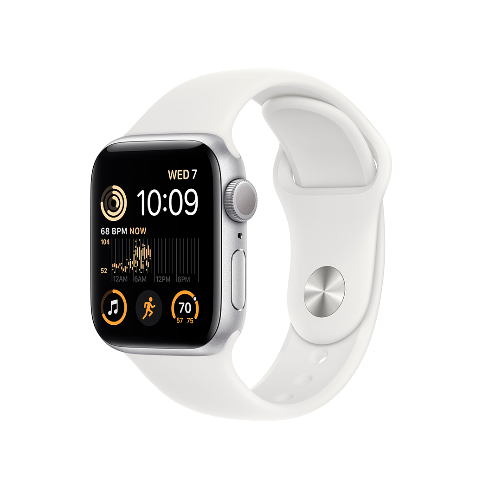
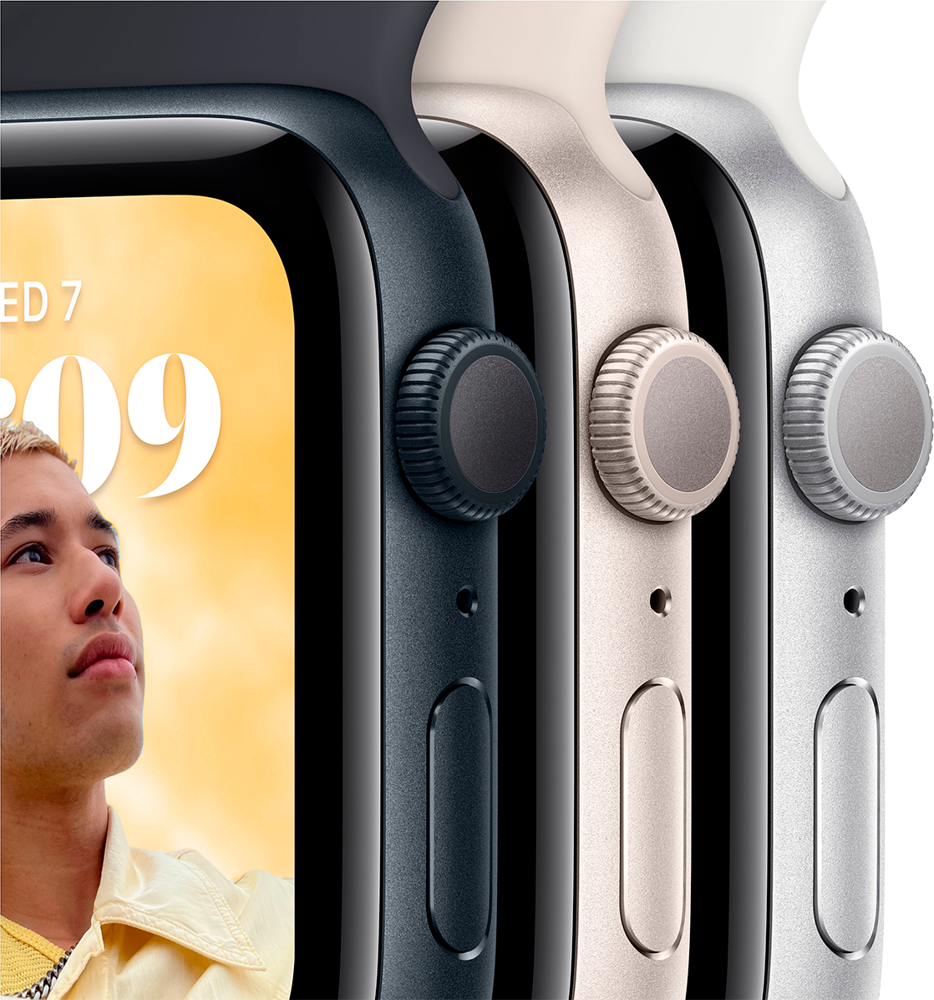
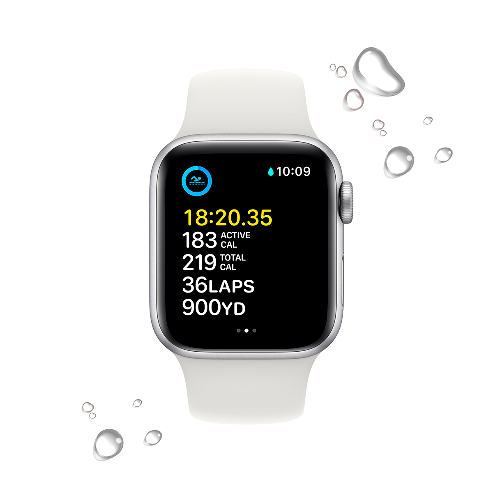
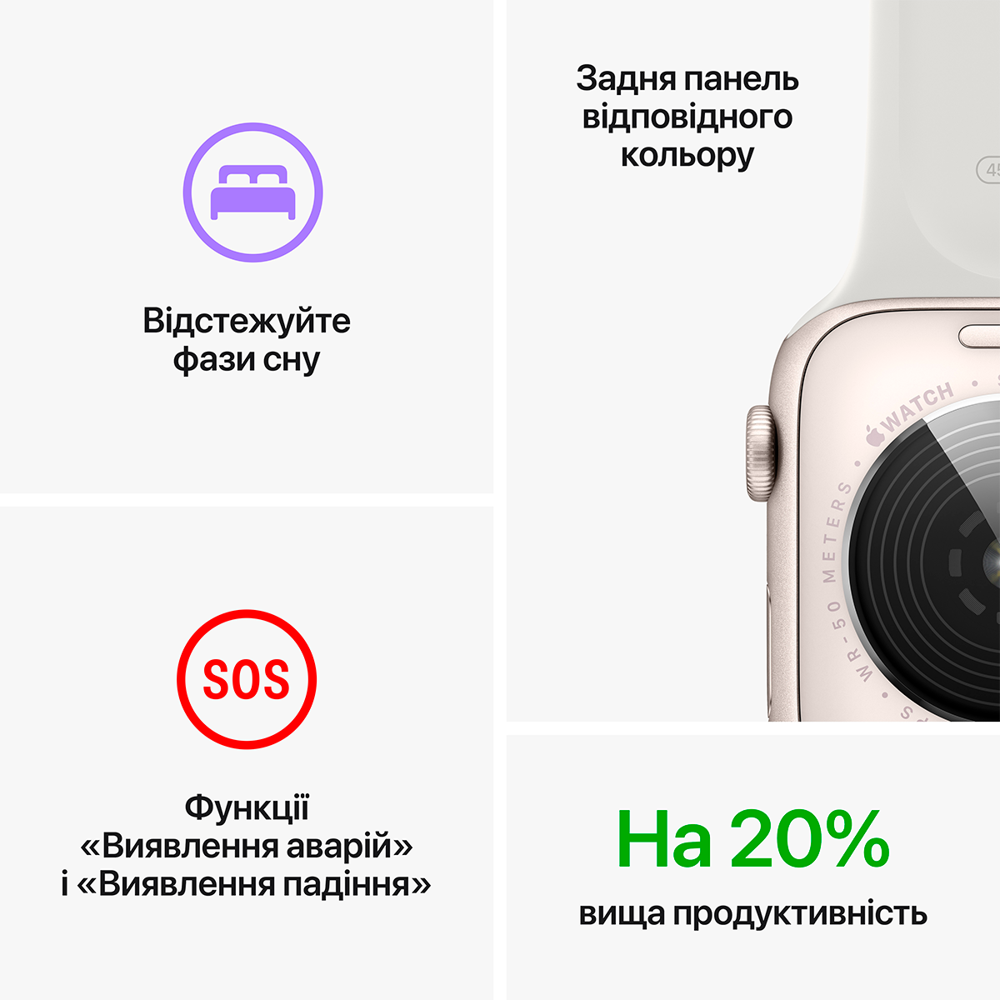
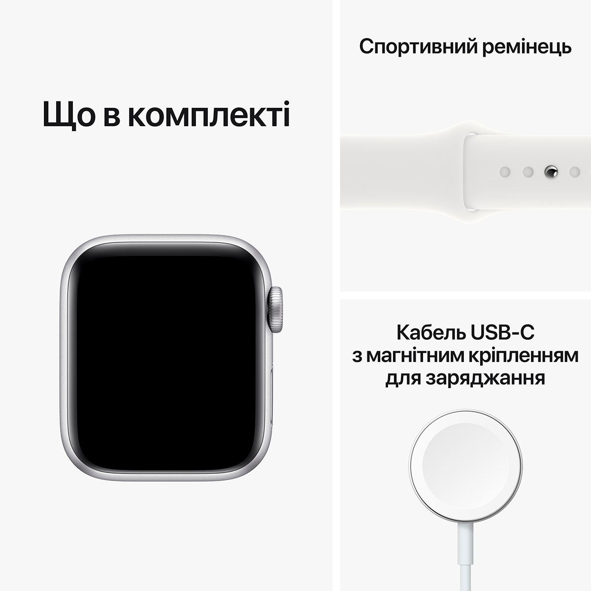

Можна закохатися.
З багатьох причин.

Основні функції для
підтримання здоров’я, безпеки
й активного способу життя.

Захист від води


Основні характеристики
Відповідайте на дзвінки та повідомлення просто із зап’ястя
До 20% швидший за попередній Apple Watch SE
Розширені функції безпеки,зокрема Виявлення падіння,Сигнал SOS і Виявлення аварій
Відстежуйте свою активність протягом дня з Apple Watch,а потім переглядайте тенденції в додатку «Фітнес» на iPhone
Покращений додаток «Тренування» з удосконаленими підходами до вправ
Отримуйте сповіщення про високий, низький і порушений серцевий ритм
Слухайте улюблену музику,подкасти й аудіокниги(для використання в моделях GPS)
Захист від води
Відстеження сну дає змогу дізнатися,скільки часу ви перебувалиу фазах швидкого,повільного та глибокого сну
watchOS 9 підтримуєпокращений додаток «Тренування», новий додаток «Ліки», фази сну та дає змогу краще відстежувати ритм серця
